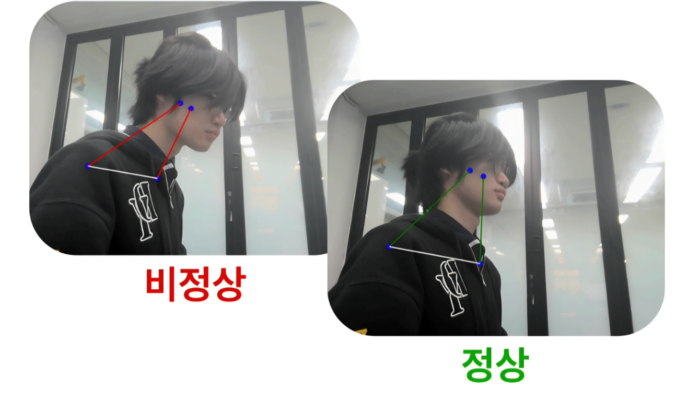

INTRODUCTION
나를 소개합니다
웹캠과 MediaPipe 기반 자세 인식 기술을 활용해 거북목 자세를 측정하는 웹 프로그램을 개발했습니다.
프로젝트 소개
MediaPipe 기반 거북목 자세 측정 웹 프로그램
웹캠 영상에서 사용자의 귀와 어깨 위치를 분석하고, 목의 각도(CVA)를 계산해 자세 상태를 실시간으로 화면에 표시합니다.
회고 및 학습 목표
이번 프로젝트를 통해 인공지능 기술과 웹 개발 기술을 결합해 일상생활의 문제를 해결할 수 있다는 점이 인상 깊었습니다. 카메라 위치와 촬영 환경에 따른 측정 오차를 줄여 정확도를 높이고, 자세 변화 통계와 시각화 기능을 추가해 사용자 편의성을 향상시키고 싶습니다.
